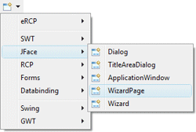
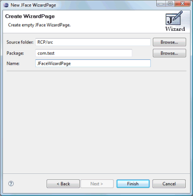
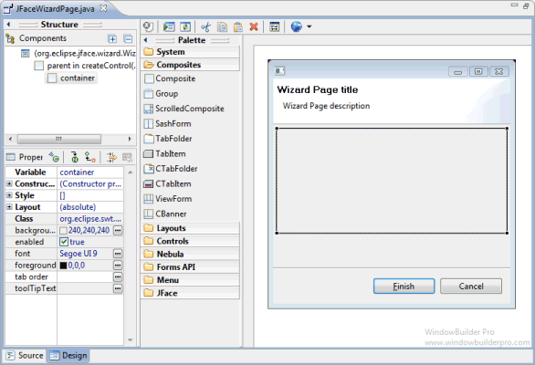

<html>

<head>
<title>JFace WizardPage Wizard</title>
<link href="../../../book.css" rel="stylesheet" type="text/css">
</head>

<body>

<h1>JFace WizardPage Wizard</h1>

<table border="0" cellpadding="0" cellspacing="0" width="800">
  <tr>
    <td>Subclasses of the JFace <b>WizardPage</b> class can be
              created using the <b>JFace WizardPage</b>&nbsp; wizard. The wizard can be
              selected from the drop down wizard menu or from the
              Eclipse <b>New</b> wizard.
              <p>To use the wizard, select the project source folder and package
              to contain the class. Then enter the class name and hit the <b>Finish</b>
              button.</td>
  </tr>
  <tr>
    <td><br>
	&nbsp; </td>
  </tr>
  <tr>
    <td>
    <p><br>
	The wizard generates the following code.</p>
      <blockquote>
              <dl>
                <dt><font face="Courier" size="2" color="#7f0055"><b>import</b></font><font face="Courier New" size="2"> org.eclipse.jface.wizard.WizardPage;<o:p>
                  </o:p>
                  </font></dt>
                <dt><font face="Courier" size="2" color="#7f0055"><b>import</b></font><font face="Courier New" size="2"> org.eclipse.swt.SWT;<o:p>
                  </o:p>
                  </font></dt>
                <dt><font face="Courier" size="2" color="#7f0055"><b>import</b></font><font face="Courier New" size="2"> org.eclipse.swt.widgets.Composite;<o:p>
                  </o:p>
                  </font></dt>
                <dt><font face="Courier New" size="2">&nbsp;<o:p>
                  </o:p>
                  </font></dt>
                <dt><font face="Courier" size="2" color="#7f0055"><b>public</b></font><font face="Courier New" size="2">
                  </font><font face="Courier" size="2" color="#7f0055"><b>class</b></font><font face="Courier New" size="2"> JFaceWizardPage
                  </font><font face="Courier" size="2" color="#7f0055"><b>extends</b></font><font face="Courier New" size="2"> WizardPage {<o:p>
                  </o:p>
                  </font></dt>
                <dt><font face="Courier New" size="2">&nbsp;&nbsp;&nbsp; 
                  </font><font face="Courier" size="2" color="#7f0055"><b>public</b></font><font face="Courier New" size="2"> JFaceWizardPage() {<o:p>
                  </o:p>
                  </font></dt>
                <dt><font face="Courier New" size="2">&nbsp;&nbsp;&nbsp;
                  &nbsp;&nbsp;&nbsp;&nbsp;</font><font face="Courier" size="2" color="#7f0055"><b>super</b></font><font face="Courier New" size="2">(</font><font size="2" color="#2a00ff" face="Courier">&quot;wizardPage&quot;</font><font face="Courier New" size="2">);<o:p>
                  </o:p>
                  </font></dt>
                <dt><font face="Courier New" size="2">&nbsp;&nbsp;&nbsp;
                  &nbsp;&nbsp;&nbsp;&nbsp;setTitle(</font><font size="2" color="#2a00ff" face="Courier">&quot;Wizard Page
                  title&quot;</font><font face="Courier New" size="2">);<o:p>
                  </o:p>
                  </font></dt>
                <dt><font face="Courier New" size="2">&nbsp;&nbsp;&nbsp;
                  &nbsp;&nbsp;&nbsp;&nbsp;setDescription(</font><font size="2" color="#2a00ff" face="Courier">&quot;Wizard Page
                  description&quot;</font><font face="Courier New" size="2">);<o:p>
                  </o:p>
                  </font></dt>
                <dt><font face="Courier New" size="2">&nbsp;&nbsp;&nbsp; }<o:p>
                  </o:p>
                  </font></dt>
                <dt><font face="Courier New" size="2">&nbsp;&nbsp;&nbsp;
                  </font><font face="Courier" size="2" color="#7f0055"><b>public</b></font><font face="Courier New" size="2">
                  </font><font face="Courier" size="2" color="#7f0055"><b>void</b></font><font face="Courier New" size="2"> createControl(Composite parent) {<o:p>
                  </o:p>
                  </font></dt>
                <dt><font face="Courier New" size="2">&nbsp;&nbsp;&nbsp;
                  &nbsp;&nbsp;&nbsp;&nbsp;Composite container = 
                  </font><font face="Courier" size="2" color="#7f0055"><b>new</b></font><font face="Courier New" size="2"> Composite(parent, SWT.</font><font size="2" color="#0000c0" face="Courier"><i>NULL</i></font><font face="Courier New" size="2">);<o:p>
                  </o:p>
                  <o:p>
                  </o:p>
                  </font></dt>
                <dt><font face="Courier New" size="2">&nbsp;&nbsp;&nbsp;
                  &nbsp;&nbsp;&nbsp;&nbsp;setControl(container);<o:p>
                  </o:p>
                  </font></dt>
                <dt><font face="Courier New" size="2">&nbsp;&nbsp;&nbsp; }<o:p>
                  </o:p>
                  </font></dt>
                <dt><font face="Courier New" size="2">}</font></dt>
              </dl>
      </blockquote>
      <p>When editing JFace WizardPages, widgets may only be added to the main content
      area.</p>
      <p></p>
    </td>
  </tr>
</table>
</body>
</html>
